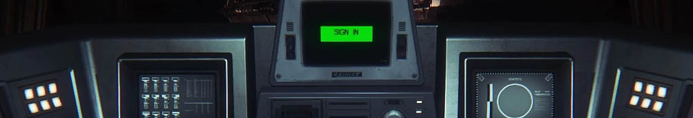
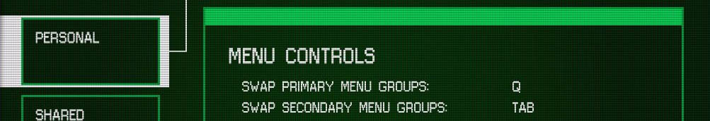
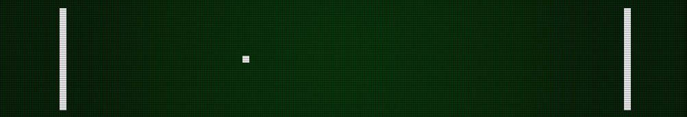

For my first assignment at university I had to recreate the classic game of PONG. As the theme of the game was left up to us, being a fan of the terminal computers in Alien: Isolation I opted to style my game as if it was being played within one of those computers.
I took reference screenshots of the terminals and extracted the UI files from the game and decompiled them. This allowed me to get a really good look at the makeup of the "Sevastolink" terminal interface to faithfully recreate it in ASGE. I set about creating sprites in Photoshop to mimick the ones found within the original designs which was relatively simple since it is all blocky pixel-style artwork. I created multiple states for each sprite such as active/inactive on the menu tabs. Usefully, I managed to grab the "Jixellation" font used in the original UI files which allowed me to render text through ASGE in the correct style for dynamic content like scoreboards.
For the design of the game itself outside of the menus, I experemented with a number of style choices but eventually settled on a style similar to the original blocky components of the original game, in a plain white. It complemented the green gradient background nicely and felt like it fitted in the UI perfectly.
Having access to Alien: Isolation's UI allowed me to extract the VHS static sprites used to add glitches to menus. I scripted a simple animation for these to play at points within the game which could be called in quite a neat fashion when required. Additionally, I found a nice scanline texture online which coupled with a vignette made the game look as if it was being played through an old TV monitor.
As the project was being developed for Windows systems, I opted not to use a cross-platform sound library, but instead use PlaySound() which ended up being pretty limiting although it did the job. The sounds of the ball hitting the paddle and UI glitches added to the aesthetic of the game nicely.
Looking back, I wish I had organised the codebase better - everything is far too abstracted and it's pretty hard to find what you're after. For a bigger project I think it's a nice structure, but for something so small, it's a little much!
The final project can be found in multiple forms below.